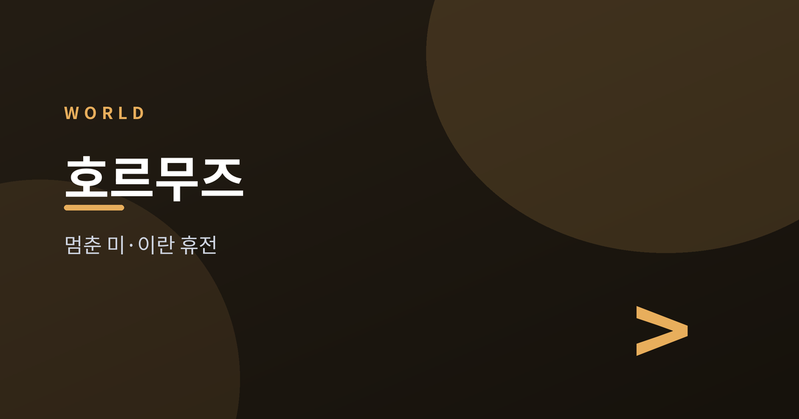
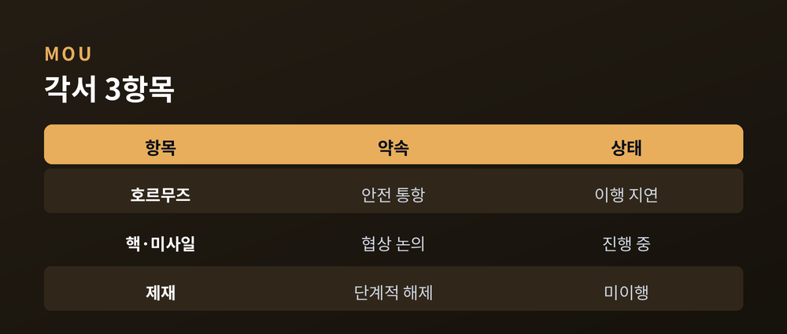
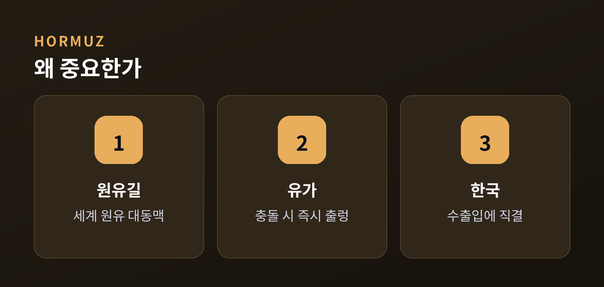
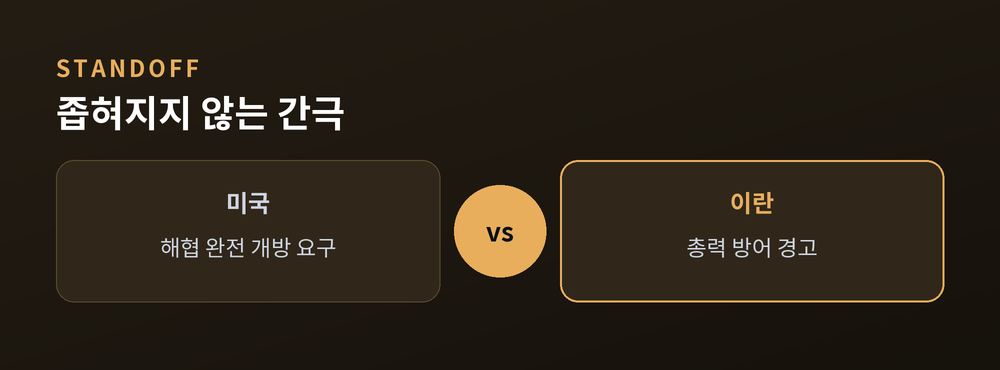
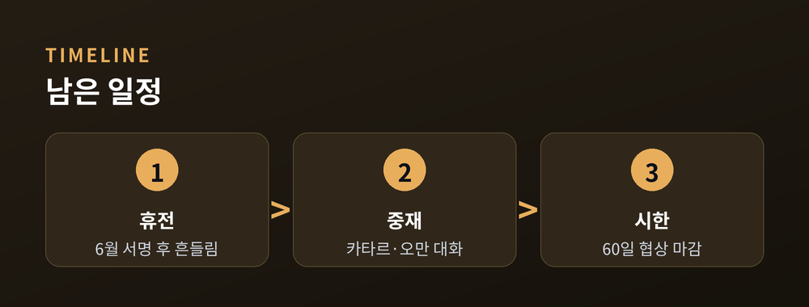

중재로 버티는 위태로운 대화

미국과 이란이 지난달 맺은 휴전이 다시 흔들리고 있습니다. 트럼프 대통령은 이번 주 "휴전은 끝났다"고 말했습니다. 동시에 "대화는 계속한다"고도 했습니다. 끝났다는 말과 이어간다는 말이 한 문장 안에 함께 있는 셈입니다. 무슨 일이 있었고, 왜 중요하며, 앞으로 무엇을 지켜봐야 하는지 정리해 보겠습니다.
지난 6월 17일, 두 나라는 14개 항목의 양해각서(MOU)에 서명했습니다. 60일 동안 호르무즈 해협의 통항, 이란의 핵·미사일 문제, 제재 해제를 논의한다는 내용이었습니다.
그러나 7월 들어 다시 충돌이 벌어졌습니다. 이란이 해협 일부에 대한 통제를 주장하며 선박을 향해 사격했고, 미국은 이를 각서 위반으로 봤습니다. 트럼프 대통령은 휴전 종료를 선언하면서도 이란이 요청한 협상 지속에는 응했습니다.

핵심은 호르무즈 해협입니다. 전 세계 원유의 상당 부분이 이 좁은 바닷길을 지납니다. 통항이 막히면 유가가 출렁이고, 그 여파는 수출입에 기댄 한국 경제에도 곧바로 닿습니다.
실제로 시장은 민감하게 반응했습니다. 국제 유가 기준인 브렌트유는 배럴당 78달러 안팎까지 내렸습니다. 해협이 다시 열릴 것이라는 기대를 미리 반영한 흐름이었습니다. 반대로 대화가 깨지면 가격은 순식간에 방향을 바꿀 수 있습니다.

당사자 사이의 간극은 넓습니다. 미국은 해협의 완전한 개방을 요구합니다. 이란의 핵심 협상가는 "미국이 각서를 배신하면 총력 방어에 나설 것"이라고 맞섰습니다. 양쪽 모두 물러서지 않는 모습입니다.
이 틈을 메우는 것이 중재국입니다. 카타르 협상단은 테헤란을 찾았고, 이란 외무장관은 오만 무스카트에서 후속 대화를 이어갔습니다. 튀르키예와 파키스탄도 물밑에서 움직였습니다. 여기에 이스라엘과 레바논 사이의 긴장까지 얽혀 있어, 상황은 여러 갈래로 복잡합니다.

전망은 아직 열려 있습니다. 60일 협상 시한이 남아 있는 만큼, 대화의 문이 완전히 닫힌 것은 아닙니다. 중재국들이 다리를 놓는 한 파국은 미뤄질 수 있습니다.
다만 변수는 많습니다. 호르무즈에서 작은 충돌 하나가 다시 불씨가 될 수 있고, 유가와 지정학 리스크는 언제든 방향을 틀 수 있습니다. 어느 한쪽의 입장만으로는 풀리지 않는 국면입니다.
지켜봐야 할 것은 분명합니다. 해협이 실제로 열리는지, 협상 시한 안에 합의가 나오는지입니다. 위태로운 대화가 언제까지 버틸지는, 이번 여름의 몫으로 남았습니다.

※ 이 글은 정보 제공을 위한 해설이며 특정 입장을 지지하지 않습니다.
참고: CNN, Al Jazeera, Axios, House of Commons Library, Wikipedia